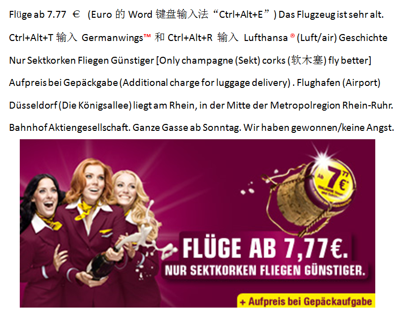

返回主页
科技-艺术-商业-生活（SLA二语习得）

德国之翼能提供最低不到8欧元的超低票价
德国之翼总部设在德国北威州著名城市科隆。1997年，欧洲之翼航空公司成立廉价航空分部；随后于2002年，分部成为独立公司，至此德国之翼正式成立。自2009年始，德国之翼成为了汉莎航空的全资子公司。今年1月在空难发生之前，汉莎航空就曾发布消息称，会到秋季之前完成品牌整合，届时德国之翼将再度回归欧洲之翼旗下。
德国之翼机队目前拥有81架现役飞机，4架飞机尚在预定中。其中，47架为空客A319，17架为空客A320，另有21架为庞巴迪CRJ900；4架预定中的客机均为A320.
在德国各地，在各种媒介上，德国之翼的广告都令人应接不暇：依靠三名发色各异的靓丽模特，德国之翼已经在人们心中注入了深深的品牌效应。大胆而鲜艳的紫红色制服为德国之翼增色不少。
Jeff Bezos' Speech in Princeton
Roban 音乐 300
《冰雪奇缘》（Frozen）
儿童学习与发展指南
version:1.0; jobnet@188.com © retter2012.com